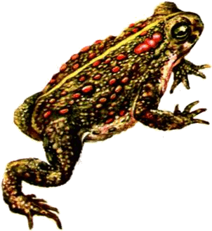

Название: камышовая жаба.
Ареал: Чешская республика, Украина, Великобритания, Швейцария, Швеция, Испания, Российская Федерация, Португалия, Польша, Нидерланды, Люксембург, Литва, Латвия, Ирландия, Германия, Франция, Эстония, Дания, Бельгия, Белоруссия, Австрия.
Описание: камышовая жаба - самая громкая (голос самцов слышен на несколько километров) и в то же время самая маленькая из европейских жаб. Паротоидные железы расположены позади глаз. Глазной зрачок горизонтальный. Околоушные железы округло-треугольные. Кожа с крупными бугорками каштанового или слегка красноватого цвета. Снизу серо-белая. Кожа задней части брюха зернистая. Самец с непарным горловым резонатором. Внутренний и второй палец жабы приблизительно одной длины. Выступающая вдоль голени складка кожи всегда очень отчетлива, а сочленовная мозоль (под последним суставом четвертого пальца) бывает всегда парной. Горло у самцов лиловое, у самок белое.
Камышовая жаба не может высоко и далеко прыгать. Плохо плавает (в глубоких водоемах быстро тонет). Способна выбраться из глубокой ямы, взобраться на пень, прогуляться по шероховатой коре чуть наклонного древесного ствола. При виде врага камышовая жаба старается убежать, но если ее обеспокоили и захватили врасплох, то от страха она стягивает свою кожу, из-за чего все кожные железы опоражниваются и покрывают животное белой пенистой жидкостью, распространяющей неприятный запах.
Окрас: сверху оливкового, буроватого, иногда серо-песочного цвета, часто с пятнистым рисунком (пятна темного или зеленоватого цвета), иногда без него. Вдоль спины жабы пролегает тонкая желтоватая или светлая полоса (иногда отсутствует).
Размер: 6-8 см, редко до 10 см.
Продолжительность жизни: 12-15 лет.
Голос самца "эрр...эрр...эрр". Основная частота брачных криков камышовой жабы - 1550 Герц, общая длительность крика 0,5 секунды.
Среда обитания: открытые пространства с песчаной (рыхлой) почвой. Встречается на полянах сосновых лесов, садах, парках, лугах, вересковые пустоши, дюны вдоль морского побережья или песчаные берега озер, рек и водохранилищ. Обитает камышовая жаба в основном на сухих, прогреваемых, открытых участках с легкими почвами, граничащими с влажными понижениями.
Пища/еда: ползающие беспозвоночные (муравьи, жуки, улитки, черви и пр.). Это одна из немногих жаб, которые активно преследуют добычу. Камышовая жаба, почувствовав привлекательный запах, поворачиваются в его сторону и делает хватательные движения ртом.
Поведение: камышовая жаба ведет ночной образ жизни. Днем скрывается под камнями, в норах, песке. Впадает в зимнюю спячку в сентябре-октябре, роя для этого глубокие норы. Жаба, скребя всеми ногами и соответствующими движениями тела, часто только расширяет уже готовые норы, но оно в состоянии вырывать и новые норы. В таких случаях жаба двигается задом, скребя землю своими твердыми роговыми концами пальцев задних ног; достигнув известной глубины, она переворачивается и продолжает рытье уже передними ногами, задними же, подобно кроту, выталкивает нарытую землю. Бегает на всех четырех ногах, согнув спину.
Размножение: самцы приходят к местам размножения раньше самок. Они откликаются на брачные крики своих соседей-самцов и передвигаются в их направлении, видимо, чтобы выяснить отношения. Размножение происходит в мелких, хорошо прогретых водоемах: лужах, канавах или карьерах.
Сезон/период размножения: апрель-июнь.
Половое созревание: к 3-4 годам.
Инкубация: самка камышовой жабы откладывает в среднем 3-4 тыс. икринок в виде шнуров длиной до 3 м. Личинки появляются на 5-8 дней. Головастики камышовой жабы самые мелкие из всех головастиков европейских жаб.
Потомство: из каждых 400 отложенных икринок 32% гибнет в процессе развития, 8% личинок гибнут вскоре после рождения, 24% - из-за высыхания водоема, 33% личинок заканчивают свою жизнь в желудках хищников, а воду покидает всего несколько молоденьких жаб. Питаются головастики детритом. В зависимости от температуры воды метаморфоз длится 5-16 недель. Растут жабы медленно, а, превратившись в маленьких, подвижных и юрких жаб, покидают водоемы. Только что покинувшие воду жабята, имеют в длину всего 1 см и не только чрезвычайно подвижны, но умеют также быстро лазать, прижимая при этом свое брюхо.
Польза/вред для человека: польза, приносимая камышовой жабой не меньше той, которую приносят все другие жабы.
Популяция/статус сохранения: камышовая жаба внесена в Красные книги России, Литвы, Латвии, Эстонии, Белоруссии, Украины, Великобритании.
Информация с сайта http://www.zooclub.ru/amfib/b6/index.shtml